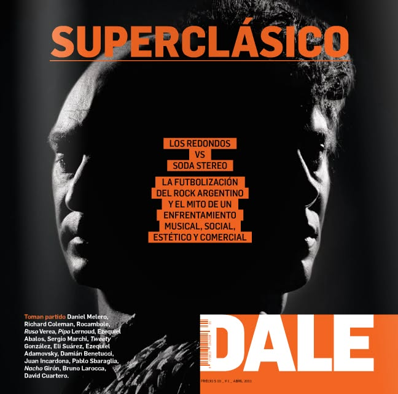

Reproducir música
Los redonditos de ricota nacieron literalmente en una noche. El 26 de noviembre de 1977, durante su primer show oficial en el Teatro Lozano, Edgardo "el Docente" Gaudini, vestido de sultán, repartió buñuelos redondos de nuez y ricota al público, presentándolos como "redonditos y afrodisíacos". La receta la había sacado de un libro de la ecónoma Patricia Rey. Esa noche nació el nombre casi por accidente.
")
Pero el propio Indio contó en una entrevista reciente una versión más personal sobre cómo llegó a ese libro: "En los libros que había en mi casa, mi viejo leía nada más que historia y política, no leía ningún romance, me encuentro un doble página de un recetario de Royal donde aparecía la ilustración de una tal Patricia Rey, pero que ni siquiera existía porque era un dibujo de una rubia con un pañuelo que daba una receta de redonditos de ricota". Entonces el Indio dijo: "Le puse Patricio Rey a la banda, fui y consulté con el hermano de Skay, a Skay, les gustó y ahí fuimos con eso".
Un par de integrantes de la etapa under hablando sobre sus primeras perentaciones:
Una de las cosas más llamativas de la banda fue su modelo económico. Desde el principio funcionaron con un "pozo común": cada integrante aportaba un porcentaje de lo que ganaba en los shows y con ese dinero se financiaban las grabaciones. Gulp!, su primer disco, se pagó íntegramente así. Nunca firmaron con una discográfica grande, nunca tuvieron sponsors, nunca hicieron publicidad televisiva. En una época donde el rock argentino dependía casi completamente de los sellos multinacionales.

El 23 de mayo de 1987 Los Redondos tocaron en Cemento. Esa noche Luca Prodan subió al escenario y cantó junto a los Redonditos una inolvidable versión de "Criminal Mambo". No estaba previsto. El asalto de Luca al escenario luce como una historia fugaz: dura lo que Prodan en el micrófono de Cemento, llevando adelante una versión unica de "Criminal Mambo" antes de desaparecer entre la gente. Sobrevive, de eso, un audio que anda dando vueltas desde la época del casete. Según El Soldado, el plomo histórico de la banda, aclara: "Las noches eran así. El mambo, el Criminal Mambo, sucedía en todas esas noches."
Los Redondos tenían una política deliberada de no dar notas, no aparecer en televisión y no hacer videoclips. El Indio Solari lo explicó muchas veces: no querían que la imagen mediática reemplazara a la música. Eso generó una paradoja enorme: cuanto menos aparecían, más los buscaban. Cuando finalmente dieron una conferencia de prensa masiva, fue en Olavarría en 1997 durante la censura del intendente, y fue la única vez que se comunicaron con el periodismo de esa manera formal.
Es quizás la grieta más famosa del rock argentino. Nunca fue una pelea declarada públicamente entre Gustavo Cerati y el Indio Solari, pero sus seguidores la convirtieron en una guerra cultural. Soda representaba el rock prolijo, comercial, con videoclips, contratos con Sony y llegada masiva a toda Latinoamérica. Los Redondos representaban lo opuesto: underground, independiente, sin concesiones al mercado. El Indio llegó a decir que prefería "el barro al plástico". Los ricoteros veían a Soda como vendidos; los soderos veían a Los Redondos como sucios y caóticos.

El 19 de abril de 1991, durante un show en el estadio Obras, la policía realizó una feroz represión en los alrededores del estadio y detuvo a decenas de jóvenes. Entre ellos estaba Walter Bulacio, de 17 años, quien murió días después a causa de los golpes recibidos en la comisaría. El caso se convirtió en uno de los símbolos más dolorosos de la violencia policial en la democracia argentina y persiguió a la banda durante años, no porque tuvieran responsabilidad directa, sino porque los medios los estigmatizaron como si sus shows fueran zonas de guerra. La canción "Juguetes perdidos", de Luzbelito, es considerada por muchos un homenaje a Bulacio, aunque la banda nunca lo confirmó oficialmente.